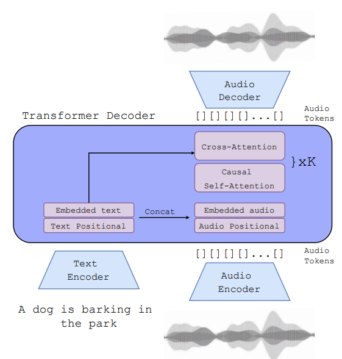
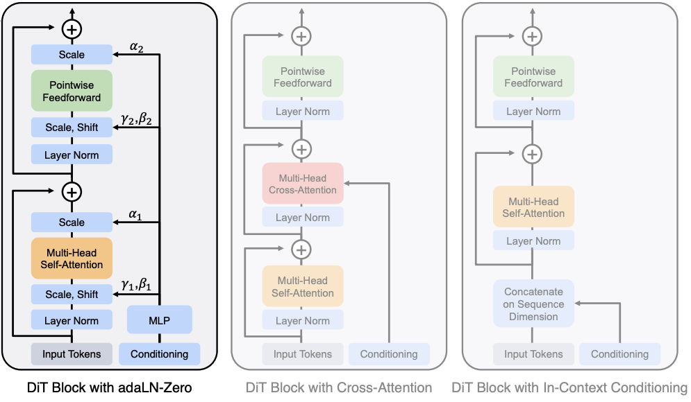

Multimodal & Advanced Models · Deep Dive: Audio Generation
Steering the AI: Conditioning and Guidance
In Lesson 3, we turned continuous audio waveforms into discrete streams of neural codec tokens.
An unconstrained autoregressive Transformer trained on these tokens will generate audio that sounds like a random walk through its training distribution. It might drift from a classical piano sonata into heavy metal guitar feedback, followed by a snippet of spoken podcast dialogue.
To build useful generative models, we need a mathematical steering wheel.
Conditioning is the mechanism that reshapes the probability distribution at every single autoregressive step. Instead of sampling from a generic prior \(P(a_t \mid a_{<t})\), we condition generation on an external control signal \(c\):
Where \(\mathbf{c}\) can be a natural language prompt ("lo-fi hip hop beat with warm piano"), an audio prefix (continuing an existing 3-second recording), a melody pitch contour, or an empty set (\(\emptyset\)).
- Sound as Waveforms & Spectrograms
- Recipes (MIDI) vs. Records (Raw Audio)
- Audio Tokens & Neural Codecs (EnCodec, SoundStream, DAC)
- Conditioning Mechanisms: Steering Audio Models (You are here)
- Modern Architectures (AudioCraft, Diffusion Models) & Evaluation
1. How Conditioning Reshapes the Softmax Distribution
At any generation step \(t\), the final linear layer of an audio language model outputs a vector of raw, unnormalized scores called logits (\(z_1, z_2, \dots, z_V\)) across the vocabulary of \(V\) codebook entries.
The model converts these logits into a valid probability distribution using the Softmax function:
Conditioning does not alter the sampling formula itself. Instead, it modifies the underlying logit vector \(z\) before the Softmax is evaluated.
Worked Numerical Example: Unconditioned vs. Conditioned Logits
Consider a toy vocabulary of 5 prototype sound tokens:
Case A: Unconditioned Generation (\(\mathbf{c} = \emptyset\))
When no condition is supplied, the network relies on its baseline training priors. The logits are nearly uniform:
| Token (\(i\)) | Logit (\(z_i\)) | Exponential \(\exp(z_i)\) | Probability \(P(i)\) |
|---|---|---|---|
soft_pad | \(1.0\) | \(\exp(1.0) \approx 2.718\) | \(\mathbf{19.4\%}\) |
guitar_pluck | \(1.2\) | \(\exp(1.2) \approx 3.320\) | \(\mathbf{23.7\%}\) |
distorted_riff | \(0.8\) | \(\exp(0.8) \approx 2.226\) | \(\mathbf{15.9\%}\) |
brush_kit | \(1.1\) | \(\exp(1.1) \approx 3.004\) | \(\mathbf{21.5\%}\) |
glitch_noise | \(1.0\) | \(\exp(1.0) \approx 2.718\) | \(\mathbf{19.4\%}\) |
| Total Sum | — | \(\sum \approx 13.986\) | \(100.0\%\) |
The distribution is diffuse. The sampler is almost equally likely to emit a chill synth pad, a drum brush, or a distorted riff.
Case B: Conditioned on Prompt \(\mathbf{c} = \text{"Heavy Metal, Electric Guitar"}\)
Through cross-attention to the prompt, the network injects strong positive energy into guitar/metal tokens (\(\Delta z = +2.0\)) and suppresses calm/acoustic tokens (\(\Delta z = -1.0\)):
| Token (\(i\)) | Conditioned Logit (\(z_i\)) | Exponential \(\exp(z_i)\) | Probability \(P(i)\) |
|---|---|---|---|
soft_pad | \(1.0 - 1.0 = \mathbf{0.0}\) | \(\exp(0.0) = 1.000\) | \(\mathbf{3.3\%}\) |
guitar_pluck | \(1.2 - 1.0 = \mathbf{0.2}\) | \(\exp(0.2) \approx 1.221\) | \(\mathbf{4.0\%}\) |
distorted_riff | \(0.8 + 2.0 = \mathbf{2.8}\) | \(\exp(2.8) \approx 16.445\) | \(\mathbf{53.6\%}\) |
brush_kit | \(1.1 - 1.0 = \mathbf{0.1}\) | \(\exp(0.1) \approx 1.105\) | \(\mathbf{3.6\%}\) |
glitch_noise | \(1.0 + 1.0 = \mathbf{2.0}\) | \(\exp(2.0) \approx 7.389\) | \(\mathbf{24.1\%}\) |
| Total Sum | — | \(\sum \approx 30.670\) | \(100.0\%\) |
Because exponentiation acts multiplicatively, shifting the logit of distorted_riff up to \(2.8\) causes its probability mass to jump from \(15.9\%\) to \(53.6\%\), heavily biasing the autoregressive engine toward the desired genre.
Edit the five logits. The bars are \(\exp(z_i)/\sum\exp(z_j)\). Try the unconditioned row \((1.0, 1.2, 0.8, 1.1, 1.0)\), then the conditioned row \((0.0, 0.2, 2.8, 0.1, 2.0)\).
2. Text Conditioning via Cross-Attention
In production systems like Meta's MusicGen, text instructions are not concatenated as prefix tokens in the main sequence. Instead, text conditioning is injected via Cross-Attention layers embedded within every Transformer decoder block.
Text Prompt: "Calm lo-fi piano" │ ▼ [ Frozen Text Encoder (e.g., T5-Large) ] │ ▼ Text Embeddings E_text ∈ ℝ^(L × d_text) │ ├───────────────────────────────┐ │ (Keys K_text, Values V_text) │ ▼ ▼ [ Transformer Decoder Block 1 ] ──► [ Transformer Decoder Block N ] ▲ ▲ │ (Queries Q_audio) │ (Queries Q_audio) Audio Token Stream a_<t ───────────┴───────────────────────────────


The Cross-Attention Mechanism
- Text Encoding: A frozen pre-trained text model (such as T5-Large or CLAP) transforms a prompt of length \(L\) into a continuous sequence of contextual vectors \(E_{\text{text}} \in \mathbb{R}^{L \times d_{\text{text}}}\).
- Key/Value Projections: These text embeddings are projected into Key (\(K_{\text{text}}\)) and Value (\(V_{\text{text}}\)) matrices and cached once:
\[ K_{\text{text}} = E_{\text{text}} W_K, \quad V_{\text{text}} = E_{\text{text}} W_V \]
- Audio Queries: At each generation step \(t\), the current state of the generated audio tokens \(a_{<t}\) forms the Query matrix (\(Q_{\text{audio}} = H_{\text{audio}} W_Q\)).
- Attention Computation:
\[ \text{CrossAttention}(Q_{\text{audio}}, K_{\text{text}}, V_{\text{text}}) = \text{softmax}\left(\frac{Q_{\text{audio}} K_{\text{text}}^T}{\sqrt{d_k}}\right) V_{\text{text}} \]
This formulation allows the model to dynamically look up relevant tokens from the prompt at every step. When generating a solo section, the queries attend heavily to "piano"; when laying down the rhythmic groove, they attend to "lo-fi beat".
3. Audio Prompting & Continuation: Working with Prefixes
Conditioning is not limited to text. In Audio Continuation, the model extends an existing audio snippet while preserving its key, tempo, and timbre.
Because neural codecs represent audio as a regular grid of \((F \times K)\) discrete indices, audio conditioning is exact:
- Pass a reference audio clip of duration \(T_{\text{prefix}}\) through the frozen neural codec encoder.
- Quantize the latents into \(F_{\text{prefix}} \times K\) discrete token IDs.
- Lock these prefix tokens into the Transformer's context buffer as fixed historical tokens (\(a_1, \dots, a_{N_{\text{prefix}}}\)).
- Run standard autoregressive sampling starting strictly at index \(N_{\text{prefix}} + 1\).
Audio Prefix (Fixed History): Generated Continuation (Sampled): Frame 0 Frame 1 ... Frame F Frame F+1 Frame F+2 ... [ k1,0 ] ──► [ k1,1 ] ──► ... ──► [ k1,F ] ──► [ k1,F+1 ] ──► [ k1,F+2 ] ──► ... [ k2,0 ] ──► [ k2,1 ] ──► ... ──► [ k2,F ] ──► [ k2,F+1 ] ──► [ k2,F+2 ] ──► ... [ k3,0 ] ──► [ k3,1 ] ──► ... ──► [ k3,F ] ──► [ k3,F+1 ] ──► [ k3,F+2 ] ──► ... [ k4,0 ] ──► [ k4,1 ] ──► ... ──► [ k4,F ] ──► [ k4,F+1 ] ──► [ k4,F+2 ] ──► ... └──────────────┬────────────────────────┘ └──────────────┬───────────────────┘ Copied directly from Reference Audio Generated Autoregressively by LM
Worked Calculation: Prefix Token Budget
Assume a \(32\text{ kHz}\) neural codec with a framing rate of \(50\text{ Hz}\) and \(K = 4\) residual codebooks.
To provide a 4.0-second drum loop as a prompt and generate 6.0 seconds of new music:
- Prefix Frames: \(F_{\text{prefix}} = 4.0\text{ s} \times 50\text{ frames/s} = \mathbf{200\text{ frames}}\)
- Prefix Tokens: \(200\text{ frames} \times 4\text{ codebooks} = \mathbf{800\text{ tokens}}\)
- New Frames to Generate: \(F_{\text{gen}} = 6.0\text{ s} \times 50\text{ frames/s} = \mathbf{300\text{ frames}}\)
- New Token Steps: \(300\text{ frames} \times 4\text{ codebooks} = \mathbf{1,200\text{ tokens}}\)
- Total Sequence Length: \(800 + 1,200 = \mathbf{2,000\text{ tokens}}\)
4. Classifier-Free Guidance (CFG): Amplifying Adherence
Even with cross-attention, autoregressive models often under-index on prompt conditioning. Left to standard sampling, the model may default to generic pop progressions rather than following nuanced prompt instructions like "ambient drone with microtonal flute".
Classifier-Free Guidance (CFG) forces the model to adhere strictly to its conditioning signal without requiring a separate classifier network.
How CFG Works
- Training with Dropout: During training, the conditioning signal \(\mathbf{c}\) is randomly dropped (replaced with a null token \(\emptyset\)) on a fraction of batches (typically \(10\text{ to }20\%\)). The single Transformer learns both the conditional distribution \(P(a_t \mid a_{<t}, \mathbf{c})\) and the unconditional prior \(P(a_t \mid a_{<t}, \emptyset)\).
- Dual Inference Forward Pass: At inference time, the model executes two forward passes at every step:
- A conditional forward pass producing logits: \(z_{\mathbf{c}} = \text{Model}(a_{<t}, \mathbf{c})\)
- An unconditional forward pass producing logits: \(z_{\emptyset} = \text{Model}(a_{<t}, \emptyset)\)
- Linear Extrapolation: The final guided logit vector is computed by moving away from the unconditional baseline in the direction of the prompt:
\[ z_{\text{guided}} = z_{\emptyset} + w \cdot (z_{\mathbf{c}} - z_{\emptyset}) \]Where \(w \ge 1.0\) is the Guidance Scale (or CFG weight).
Logit Space Extrapolation:
Unconditioned Logits (z_∅) ──────► Prompted Logits (z_c) ──────► Final Guided Logits (z_guided)
[ Vector Difference: (z_c - z_∅) ]
<───────────────────────────────>
Scaled by Factor w > 1.0
Practical Effects of the Guidance Scale (\(w\))
- \(w = 1.0\): Standard conditional sampling (no guidance boost).
- \(w = 3.0\text{ to }5.0\) (Sweet Spot): Noticeable boost in prompt adherence, cleaner instrumental separation, and tighter rhythmic fidelity.
- \(w > 8.0\) (Over-guidance): The logit distribution becomes overly peaked, leading to metallic high-frequency artifacts, repetitive musical loops, and dynamic range clipping.
5. Sampling Strategies: Temperature and Nucleus (Top-p)
Once guided logits \(z_{\text{guided}}\) are computed, the final discrete token is sampled using two key hyperparameters:
1. Temperature (\(\tau\))
Temperature rescales logits to adjust distribution entropy:
- \(\tau < 1.0\) (e.g., \(0.7\)): Sharpens the distribution, suppressing low-probability noise tokens and favoring common, stable musical patterns.
- \(\tau > 1.0\) (e.g., \(1.3\)): Flattens the distribution, introducing sonic variation and unexpected instrument pairings at the risk of structural dissonance.
2. Nucleus Sampling (Top-\(p\))
Top-\(p\) sampling truncates the long tail of low-probability codebook vectors:
- Sort token probabilities in descending order.
- Retain the smallest subset of top tokens whose cumulative sum satisfies:
\[ \sum_{i \in V_{\text{top}}} P(i) \ge p \]
- Renormalize the remaining probabilities and sample exclusively from this subset.
Setting \(p = 0.90\) eliminates improbable acoustic tokens (preventing sudden glitchy transients) while preserving expressive variance.
6. Comparison of Conditioning Paradigms Across Audio Generation
| Paradigm | Input Condition \(\mathbf{c}\) | Injection Method | Strengths | Limitations |
|---|---|---|---|---|
| Text Conditioning | Natural language string | Cross-attention over frozen text embeddings (T5, CLAP) | Highly expressive; accessible to non-musicians | Coarse control; cannot specify exact note pitches or rhythms |
| Audio Prefix (Continuation) | Pre-existing waveform snippet | Direct concatenation of encoded codec tokens | Seamless transitions; preserves exact audio fidelity and timbre | Limited to extending linear chronology |
| Symbolic Conditioning (Melody) | MIDI pitch matrix or chromagram | Feature map addition or cross-attention | Precise control over pitch contours and harmony | Requires musical knowledge to write explicit input melodies |
| Multi-Modal Steering | Text prompt + Audio reference | Joint cross-attention + prefix caching | Directs global style via text while anchoring instrumentation via audio | High risk of prompt conflict (e.g., "smooth jazz" prompt over death metal drums) |
Toggle genre / instrument / mood tags and watch a mock next-token distribution reshape — the same Softmax idea as §1, with conditioning shifting probability mass.
Genre
Instrument
Mood
Active prompt: ()
Mock next-token probabilities
Try it live: MusicGen on Hugging Face
Compare a specific prompt (e.g. calm lo-fi hip hop, dusty drums, warm electric piano) against a vague one (music) and listen for how conditioning strength shows up in the output.
7. Troubleshooting Generative Failure Modes
| Failure Symptom | Underlying Cause | Corrective Action |
|---|---|---|
| Generic, bland audio output | Low CFG scale (\(w \approx 1.0\)) or overly broad prompt | Increase CFG scale to \(w = 3.5\text{–}5.0\); add specific instrumentation, tempo, and genre descriptors. |
| Harsh metallic noise / distortion | Over-guidance from excessively high CFG (\(w > 8.0\)) | Reduce guidance scale to \(w = 3.0\text{–}4.0\). |
| Model repeats a single bar indefinitely | Temperature too low (\(\tau < 0.5\)) causing mode collapse | Increase temperature to \(\tau = 0.8\text{–}1.0\), or increase Top-\(p\) to \(0.95\). |
| Audio ignores continuation prefix | Prefix too short (e.g., \(\lt 1.0\text{ s}\)) or mismatch in sample rate | Provide at least \(3.0\text{ to }5.0\text{ seconds}\) of clean prefix audio. |
| Total musical chaos / out-of-tune notes | Sampling temperature too high (\(\tau > 1.4\)) or Top-\(p\) unbound | Lower temperature to \(\tau = 0.85\) and set Top-\(p = 0.90\). |
Knowledge Verification
Question: A generative audio model is predicting token \(a_t\). For a specific codebook token (acoustic_snare), the unconditioned forward pass produces a logit \(z_{\emptyset} = 1.5\). The text-conditioned forward pass produces a logit \(z_{\mathbf{c}} = 3.5\).
- If the model operates with a guidance scale \(w = 3.0\), what is the final guided logit \(z_{\text{guided}}\)
- If another token (
synth_zap) has \(z_{\emptyset} = 2.0\) and \(z_{\mathbf{c}} = 1.0\), what is its final guided logit under the same guidance scale?
Show answer
- For
acoustic_snare:\[ z_{\text{guided}} = z_{\emptyset} + w \cdot (z_{\mathbf{c}} - z_{\emptyset}) = 1.5 + 3.0 \cdot (3.5 - 1.5) = 1.5 + 3.0 \cdot (2.0) = 1.5 + 6.0 = \mathbf{7.5} \] - For
synth_zap:\[ z_{\text{guided}} = 2.0 + 3.0 \cdot (1.0 - 2.0) = 2.0 + 3.0 \cdot (-1.0) = 2.0 - 3.0 = \mathbf{-1.0} \]
Under CFG (\(w = 3.0\)), the relative logit gap between the desired snare and the unwanted synth expands from \(3.5 - 1.0 = 2.5\) to \(7.5 - (-1.0) = 8.5\), heavily suppressing the unwanted sound.
Question: A user inputs a \(5.0\text{-second}\) audio track into a MusicGen system (\(50\text{ Hz}\) frame rate, \(K = 4\) codebooks) and requests an additional \(10.0\text{ seconds}\) of music conditioned on the prompt "ambient synth pads".
- How many total discrete tokens will make up the input prefix?
- How many forward autoregressive sampling steps must the Transformer execute to complete the generation?
- How many total tokens (prefix + generated) are passed to the codec decoder to synthesize the final 15-second waveform?
Show answer
- Prefix frames \(= 5.0\text{ s} \times 50\text{ frames/s} = 250\text{ frames}\). Prefix tokens \(= 250\text{ frames} \times 4\text{ codebooks} = \mathbf{1,000\text{ tokens}}\).
- New frames to generate \(= 10.0\text{ s} \times 50\text{ frames/s} = 500\text{ frames}\). Total new tokens generated \(= 500 \times 4 = \mathbf{2,000\text{ tokens}}\) (2,000 autoregressive steps across the delayed multi-codebook schedule).
- Total sequence length \(= 1,000\text{ prefix tokens} + 2,000\text{ generated tokens} = \mathbf{3,000\text{ tokens}}\) (spanning 750 frames).
Key Takeaways & What's Next
- Conditioning shifts logits: External controls (prompts, audio prefixes) bias the pre-Softmax logits toward desired codebook indices.
- Cross-attention enables continuous prompt querying: Audio queries attend to frozen text key-value embeddings throughout the generation process.
- CFG scales prompt adherence: By extrapolating away from the unconditioned prior (\(z_{\emptyset}\)) toward the conditioned distribution (\(z_{\mathbf{c}}\)), Classifier-Free Guidance enhances fidelity and reduces prompt drift.
- Audio continuation uses prefix tokens: Pre-encoded codec tokens serve as an immutable starting history for ongoing autoregression.
Now that we understand how audio is tokenized (Lesson 3) and steered (Lesson 4), we can assemble the complete puzzle.
In Lesson 5, we analyze Production-Grade Architectures (AudioCraft, Diffusion Transformers, Suno, and Udio), comparing autoregressive token models against continuous latent diffusion, and examining real-world deployment challenges and ethical considerations.
- MusicGen / AudioCraft papers and Meta AudioCraft blog
- Classifier-Free Guidance (Ho & Salimans) — same linear mix used in image diffusion, applied here to token logits